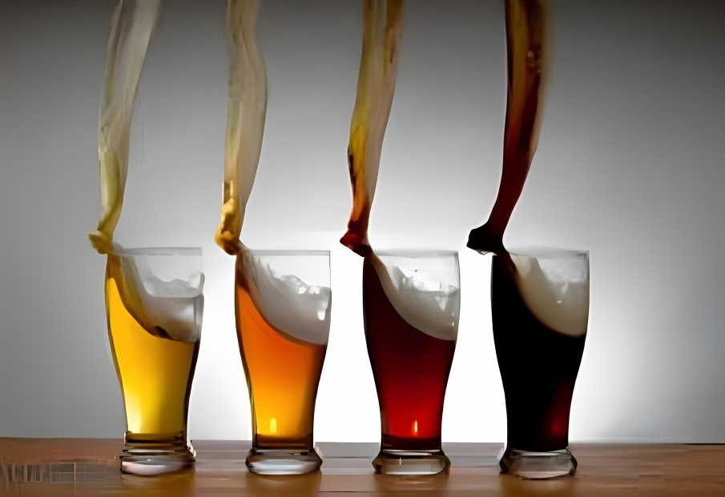

Tipos de Grano de Café
>Al igual que con el vino, elegir el grano correcto depende de su paleta. Eso es porque los granos de café tienen diferentes características de sabor según la parte del mundo en que se cultiven. Altitud, temperatura y suelo, incluso la cosecha, también desempeñan un papel importante. Mientras tostar los granos de café produce aún más notas y matices de sabor. Cuando se trata del café en la taza, solo hay dos tipos de grano que importan: Arábica y Robusta.
Leer Entrada